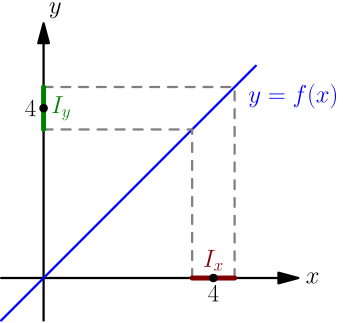
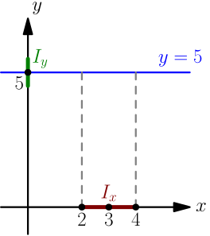
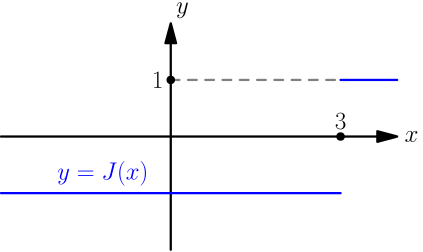
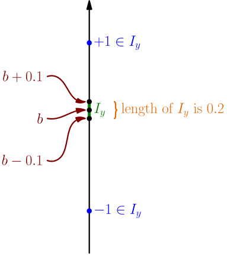
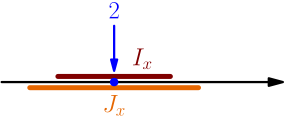
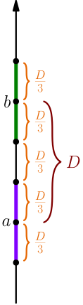

Limit Basics¶
Make sure that you know the definition of limit.
If the proofs presented on this page feel too boring, difficult or abstract, don't give up now. Limits are a tool that we need for doing fun, easy and non-abstract things, and we're currently building the tool.
Simple Example¶
We prove that $\lim_{x \to \red4} x = \green4$. I'm using more colors than usual, because the number $4$ appears in two places with two different meanings; we're saying that the limit of $x$ as $x \to \red4$ is $\green4$.
Let $f(x) = x$. We need to show that for any open interval $\green{I_y}$ centered around $\green4$, there is some open interval $\red{I_x}$ centered around $\red4$ such that $$ f(\text{any number in $\red{I_x}$ except $\red4$}) \in \green{I_y}. $$
Let $\green{I_y}$ be any open interval centered around $\green4$. Now we can choose $\red{I_x}$ however we want. We choose $\red{I_x} = \green{I_y}$, which is fine, because we need an open interval centered around $\red4$, and $\green{I_y}$ is an open interval centered around $\green4$. (We need something else for more complicated functions than $f(x)=x$.) Now $$ f(\text{any number in $\red{I_x}$ except $\red4$}) \in \red{I_x} = \green{I_y}. $$ Here we used the fact that $f(x) = x$ for all $x$; if we put something into $f$, it comes out unchanged, so any number in $\red{I_x}$ comes out as a number in $\red{I_x}$. The proof is done.
Summarizing: if we want to fit the values of $f(x)=x$ into some interval, then we can do that by using the same interval for the inputs of the function.
The graph $y=f(x)$ is in this case just $y=x$, and that's a line with slope $1$.

The proof works similarly for any other number instead of $4$.
For all numbers $a$, we have $\lim_{x \to a} x = a$.
Another Simple Example¶
We prove that $\lim_{x \to \red3} \blue5 = \green5$. This looks a little bit confusing, but it is of the same form as the equation in the definition of limit; the $f(x)$ in definition of limit is $\blue5$, and the value of the limit is $\green5$. So, we can let $\blue{f(x) = 5}$ and then prove that $$ \lim_{x \to \red3} \blue{f(x)} = \green5. $$ Let $\green{I_y}$ be any open interval centered around $\green5$. We choose $\red{I_x} = (2, 4)$, which is an open interval centered around $\red3$. Now $$ f(\text{any number in $\red{I_x}$ except $\red3$}) = \blue5 = \green5 \in \green{I_y}, $$ where in the last step, we used the fact that $\green{I_y}$ contains $\green5$; this must be the case, because $\green{I_y}$ is an interval centered around $\green5$. The proof is done.
Summarizing: if we want to fit the values of the function $f(x)=5$ into some interval around $5$, then we can do that by choosing a very simple interval for the inputs of the function.
The graph $y=\blue5$ is a line with slope $0$, so a horizontal line.

This proof works the same if we replace $5$ with some other number. We can also get it to work if we replace $\red3$ with some other number, but we need to choose $\red{I_x}$ accordingly. In general, if replace $\red3$ with $\red a$, then we can pick $\red{I_x} = (\red a-1, \red a+1)$; this is an open interval centered around $\red a$, which is all that we need for this.
For all numbers $a$ and $b$, we have $\lim_{x \to a} b = b$.
Jumping Function¶
Let's define the "jumping function" $J$ by $$ J(x) = \begin{cases} -1, & \text{if $x < 3$}; \\ +1, & \text{if $x \ge 3$}. \end{cases} $$ This function "jumps" at $x=3$.

What can we say about $\lim_{x \to 3} J(x)$? We don't know much yet, so let's say that $\lim_{x \to 3} J(x) = b$, for some number $b$, and see what happens. Now the definition of limit says that for any interval $I_y$ centered around $b$, there is an interval $I_x$ centered around $3$ such that $$ J(\text{any number in $I_x$ except $3$}) \in I_y. $$ For any $I_y$, we get some $I_x$ interval that contains numbers that are greater than $3$ and numbers that are less than $3$.
By definition of $J$, the corresponding $J$ values are $+1$ and $-1$, and we get $$ +1 \in I_y, \quad -1 \in I_y. $$ So, for any open interval $I_y$ centered around $b$, we have $+1 \in I_y$ and $-1 \in I_y$. This must also work for small $I_y$ intervals, such as $I_y = (b-0.1, b+0.1)$. However, $(b-0.1, b+0.1)$ is a very short interval, of length $0.2$, so it can't contain both of $+1$ and $-1$, regardless of what number $b$ is.

There must be a mistake somewhere, and most of the above steps are quite convincing; the only thing that can be wrong is saying that $\lim_{x \to 3} J(x) = b$.
Summarizing: there is no number $b$ such that $\lim_{x \to 3} J(x) = b$, because if there was such $b$, then there would be very small intervals around $b$ containing $+1$ and $-1$.
In this case, we say that the limit $\lim_{x \to 3} J(x)$ does not exist. Saying that the limit exists means that there is some number $b$ such that $\lim_{x \to 3} J(x) = b$; that's the opposite of what we have here.
A limit might not exist.
More than One Limit¶
Can we have $\lim_{x \to 2} f(x) = 5$ and $\lim_{x \to 2} f(x) = 8$ for the same function $f$?
If you think of the notation such that $\lim_{x \to 2} f(x)$ by itself is a thing, then this is obviously not possible; there's no way how something could be equal to $5$ and $8$ at the same time. However, that's not how we have defined the limit. The definition doesn't say anything about what $\lim_{x \to 2} f(x)$ by itself is; it only tells what setting that equal to something means, such as $\lim_{x \to 2} f(x) = 5$.
Let's see what happens if we have $\lim_{x \to 2} f(x) = 5$ and $\lim_{x \to 2} f(x) = 8$. By choosing $I_y=(4,6)$ in the definition of $\lim_{x \to 2} f(x) = 5$, we get an open interval $I_x$ centered at $2$ such that $$ f(\text{any number in $I_x$ except $2$}) \in (4,6). $$ By choosing $I_y=(7,9)$ in the definition of $\lim_{x \to 2} f(x) = 8$, we get another open interval $J_x$ centered at $2$ such that $$ f(\text{any number in $J_x$ except $2$}) \in (7,9). $$

The intervals $I_x$ and $J_x$ overlap, so there are numbers that are in both of $I_x$ and $J_x$. If $o$ is one of these "overlap numbers", then we get $$ f(o) \in (4,6) \quad \text{and} \quad f(o) \in (7,9), $$ which is impossible.
Again, we arrived at something impossible, so we made a mistake somewhere along the way. The mistake is assuming that we have $\lim_{x \to 2} f(x) = 5$ and $\lim_{x \to 2} f(x) = 8$. So, having $\lim_{x \to 2} f(x) = 5$ and $\lim_{x \to 2} f(x) = 8$ at the same time is impossible.
Summarizing: we can't have $\lim_{x \to 2} f(x) = 5$ and $\lim_{x \to 2} f(x) = 8$ at the same time, because that would mean that some values of $f(x)$ are in a small interval around $5$ but also in a small interval around $8$.
This works the same if we replace $2$ with any other number. Replacing $5$ and $8$ with other numbers is a bit more tricky.
Let's say that we want to replace $5$ and $8$ with two different numbers $a$ and $b$; that is, we have $\lim_{x \to 2} f(x) = a$, $\lim_{x \to 2} f(x) = b$, and $a \ne b$. Above we used the intervals $(4,6)$ and $(7,9)$, because they are intervals around $5$ and $8$ respectively, and there are no numbers that are in both intervals. So, we need open intervals centered around $a$ and $b$ such that they have no points in common. Letting $D$ denote the distance between $a$ and $b$ (positive because $a \ne b$), the intervals $(a-\frac{D}{3}, a+\frac{D}{3})$ and $(b-\frac{D}{3}, b+\frac{D}{3})$ work for this.

With all this, we see how this generalizes for any two different numbers $a$ and $b$.
A limit can't be equal to two different numbers.
Also, the limit can't be equal to more than two different numbers, because if a limit was equal to more than two different numbers, then we could pick two of those numbers; the limit would be equal to them, and that's impossible by the above result.
A limit can be equal to at most one number.
An important consequence of this result is that if there is some number that the limit equals to (in other words, if the limit exists, unlike in the jump example above), then we can write things like $$ \left( \lim_{x \to a} f(x) \right)^2 + 7. $$ This is a shorthand for letting $L$ be the only number for which $\lim_{x \to a} f(x) = L$, and then writing $L^2+7$. We can think of $\lim_{x \to a} f(x)$ as a number, because we know that it can't be equal to multiple different numbers, which prevented us from doing that in the past.